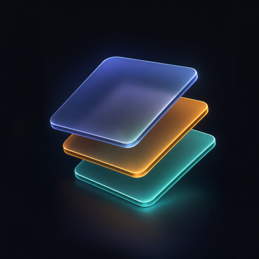
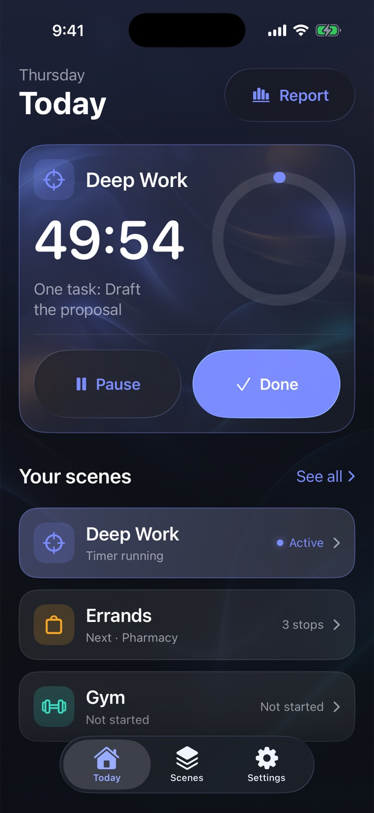
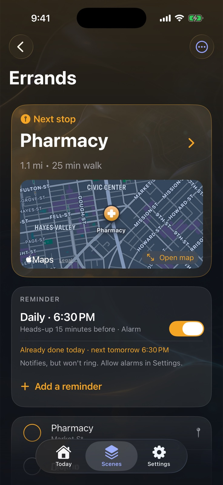
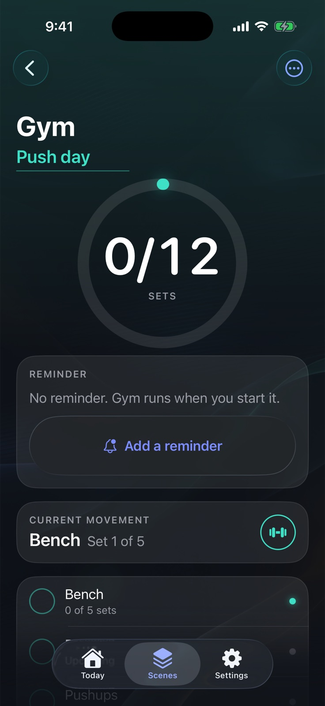
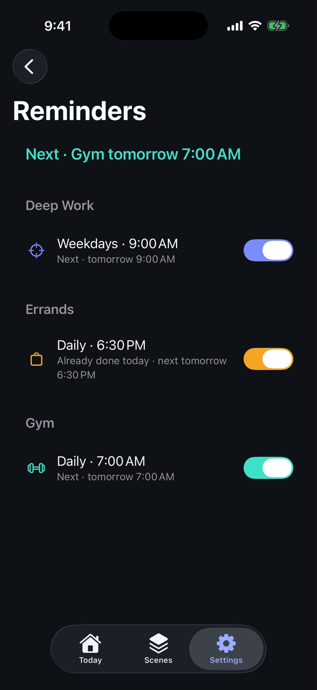
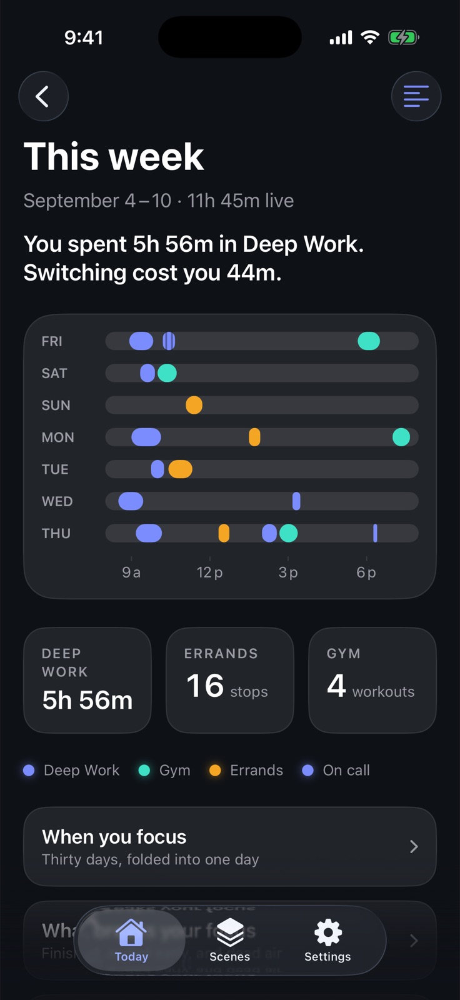

Scenes
One thing at a time. iPhone, iOS 26.5 or later.
Your phone should already know what you are doing.
Scenes puts the one thing you are doing on the Lock Screen, in a widget and in Control Center, and keeps all three in sync. Change what you are doing, and every glance surface changes with you.



One scene is live at a time. Whichever it is rides the Lock Screen, the Dynamic Island and Control Center, so the phone and you agree.
The problem
You already built this out of four apps.
Focus, a timer, a list app, a workout app. That stack does not share state, so the pieces never agree with each other.
Ticking off "Pharmacy" does nothing
Your list app knows. Your Lock Screen does not, so you unlock the phone to find out what is next.
A rest timer stays in your hand
Starting it does not change a Control Center button, so the phone comes out of your pocket for every set.
Every mode feels like a different phone
Deep work, errands and the gym each have their own app, their own timer and their own idea of what you are doing.
Scenes is one piece of state, drawn everywhere at once. Start it from Control Center, advance it from the Lock Screen, finish it from the Action button. The app never has to be open, and if you have to open it to know what to do next, Scenes has failed.
The rule
One live scene. Never two.
Starting a scene pauses the one before it, so you never get two timers arguing on the Lock Screen. The live scene shows one thing: the next action, and the button that finishes it.
- Switch in one tap from Today, a widget or Control Center.
- Nothing is lost when you switch. A paused scene keeps its place and its progress.
- The whole phone follows. Widgets, StandBy and the Live Activity redraw together.
The scenes
Six ways to be busy, one way to run them.
A block, an end time, one task
The task you are inside sits under the countdown. Pause it, extend it, or finish early, without unlocking.
Stops in order, next one visible
The next unchecked stop rides on the Lock Screen while you walk, with how far it is. Tick it from Control Center, and undo it when your pocket does it for you.
Sets, and rest that runs on the Lock Screen
Movements, set counts and a rest timer that rings on silent, so the phone can stay face down between sets.
One timed thing, plus what Health measured
Distance, steps, energy and heart rate for the time you were out. Only if you say yes to Health, and nothing read from it is stored, synced or exported.
Your own checklist
Name it, list the steps, add a timer if it needs one. School run, shop close, evening reset.
A promise, not a nag
Give a scene a time and it arms one alarm for the next occurrence. Did it already? It stands down. Nothing here is counted, and no one keeps score.
The surfaces
Built for the glance, not the app.
- Lock Screen widgets in every accessory size.
- A Live Activity showing the next action, with a button to advance it.
- Control Center controls to start a scene or advance the live one.
- Home Screen widgets and StandBy for the desk.
- Siri, Shortcuts and the Action button, to start or advance without looking.
- Alarms with a per-scene sound for the end of a block or a rest set, so it rings on silent.
- A Focus filter, so Apple Focus can switch the scene for you.

The record
Where the day actually went.
Every live period is kept, so the week can tell you something true: how long you were really in Deep Work, what hour you are sharpest, what interrupted you, and what a month of gym days looks like.
Nothing here is a score. No grade, no streak, no nagging notification. Just what happened, plus a full JSON export of all of it whenever you want to take it elsewhere.

Privacy
No account. No email. No tracking.
There is no sign-up, because there is no server to sign up to. Your scenes live on your iPhone, and with sync turned on they live in your own iCloud account, where we cannot read them.
Nothing is collected
No analytics SDK, no advertising SDK, no crash reporting service, no profile of you anywhere.
Permissions asked late
Notifications after your first block. Location only on your first mapped errand stop, and never "Always". Health only if you open a walk.
Your data leaves when you say
Export everything as JSON from Settings. Delete the app and the local copy goes with it.
Pricing
One price. The whole app.
Scenes is subscription only: no free tier, no scene cap, nothing held back for a higher plan. The 7-day trial is the real thing, because there is only one thing.
Weekly
$1.49
Per week, after the trial.
Monthly
$2.99
Per month, after the trial.
Annual
$19.99
Per year, after the trial. About $1.67 a month.
Prices shown in US dollars; the App Store charges in your local currency. The free trial is granted once per subscription group, so the first plan you take spends it. Subscriptions renew automatically unless auto-renew is turned off at least 24 hours before the period ends, and you can cancel any time in iPhone Settings.
Questions
Before you ask.
Do I need an Apple Watch?
No. Health is optional, and every scene works without it. If you do wear one, a walk or run shows what it measured.
Can Scenes set my Apple Focus or wallpaper?
No app can do that for you, so Scenes does not pretend to. It coaches you through the one-time setup, and its Focus filter lets Focus drive the scene instead.
Does it work if the app is closed?
Yes. Widgets, controls and the Live Activity render from a shared snapshot, so the phone stays right without the app running.
What happens to my data if I cancel?
It stays on your iPhone, and you can export all of it as JSON at any time.
Is there an iPad, Mac or Watch app?
Not yet. Scenes is an iPhone app, because that is where the Lock Screen, Control Center and the Action button are.